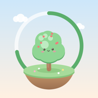

Zeit wählen & pflanzen
Stell ein, wie lange du dich konzentrieren möchtest, und such dir aus, was wachsen soll. Ein Tipp – und der Keimling ist gesetzt.

Fokus-WaldKostenlos · ohne Konto · ohne Werbung
Fokus-Wald ist ein kleiner, liebevoll gestalteter Fokus-Timer. Während du lernst oder arbeitest, wächst eine Pflanze – und jede Session macht deine schwebende Insel ein Stück schöner.
Für iPhone, iPad, Android, Windows und Mac
So funktioniert's
Stell ein, wie lange du dich konzentrieren möchtest, und such dir aus, was wachsen soll. Ein Tipp – und der Keimling ist gesetzt.
Solange du fokussiert bleibst, wächst sie Minute für Minute – vom Keimling bis zur vollen Pracht, mit Gesicht und allem.
Jede geschaffte Session landet auf deiner Insel. Bei 30 Pflanzen ist sie vollendet – und eine neue taucht auf.
Scroll weiter und schau, was passiert
Sammeln & freischalten
Bäume, Blumen, Pilze und ein paar ganz besondere. Mit jeder Session schaltest du neue frei.
Dein Stil
Wechsle das Aussehen der ganzen App mit einem Tipp: funkelnde Sterne, fallende Kirschblüten oder leiser Schneefall.
Gestalte deine Insel selbst – einfach mit dem Finger oder der Maus zeichnen.
Fokuszeit, Wochenverlauf und deine Tages-Serie – sieh, wie viel du geschafft hast.
Einmal installiert, läuft Fokus-Wald auch ohne Internet – im Zug, in der Bibliothek, überall.
Kein Konto, keine Werbung, kein Tracking. Dein Fortschritt bleibt bei dir.
Installieren
Einmal öffnen, auf Wunsch wie eine echte App installieren – in unter einer Minute.
Eine echte iPhone-App mit Anzeige in der Dynamic Island ist in Arbeit.
Für den Mac gibt es eine eigene App – mit Anzeige neben der Notch, Mini-Timer über Vollbild-Apps und Menüleisten-Symbol.
Mac-App laden · 1,7 MBAb macOS 14 · Apple-Chip und Intel · Schritt-für-Schritt-Anleitung
Starte in zehn Sekunden – ohne Anmeldung.
Jetzt kostenlos starten